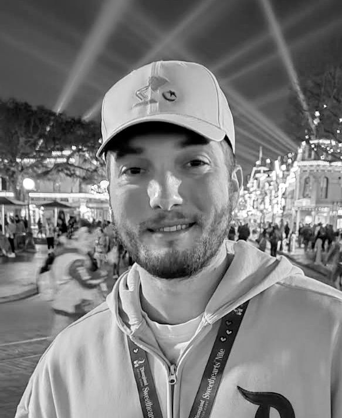
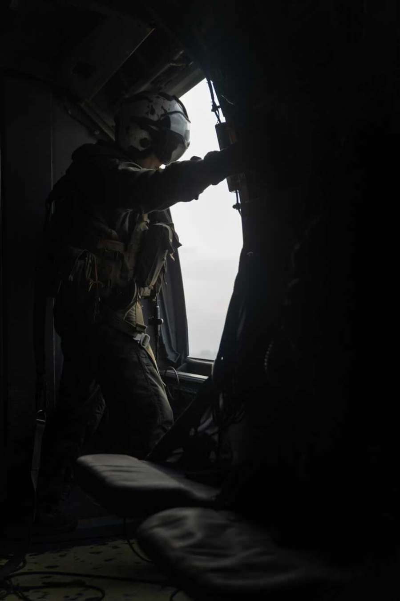
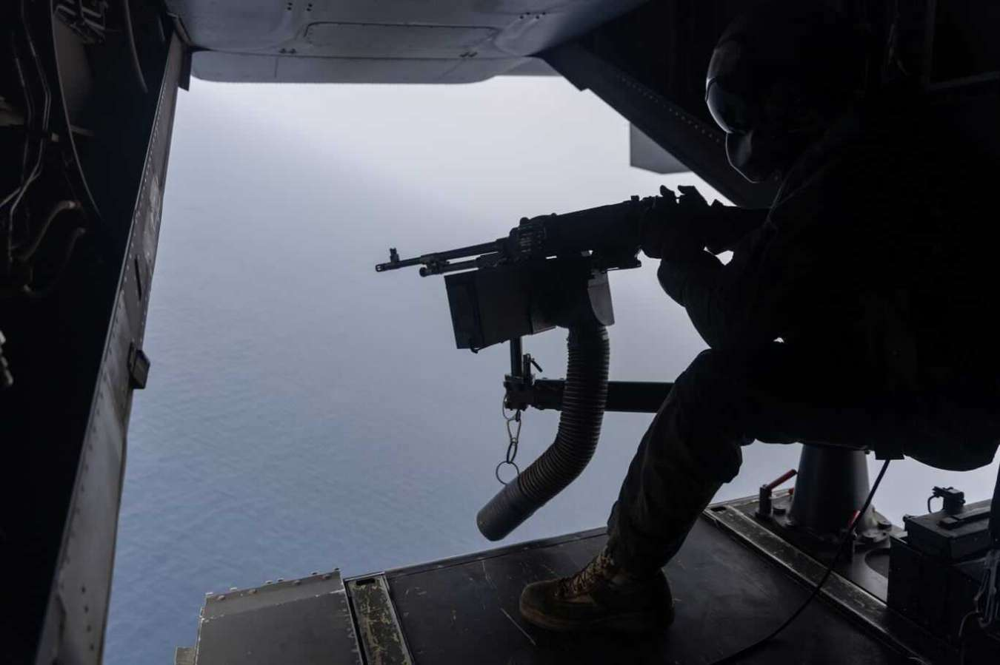
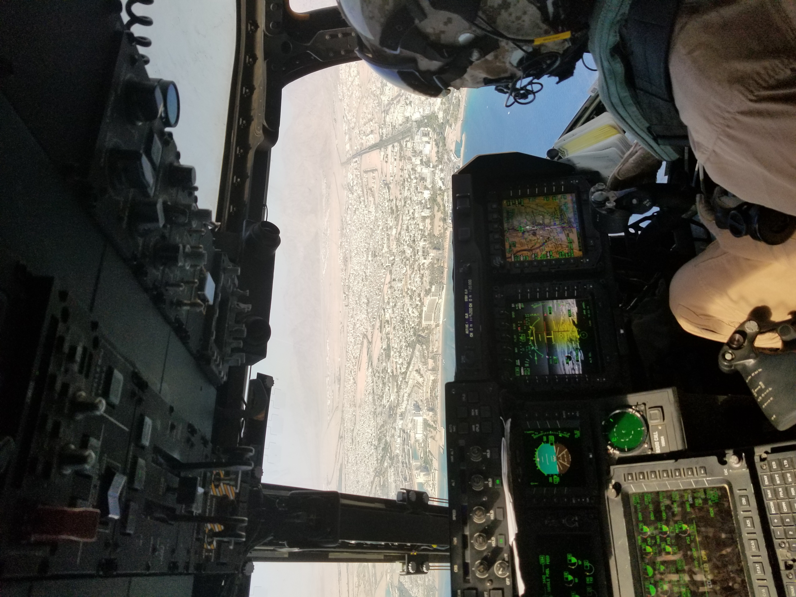

Hello, I'm Taylor!
Software Developer

About Me
I am an undergraduate Computer Science student at the University of San Diego. I enjoy hobbies such as weight lifting and mountain biking, and will occassionally play video games in my spare time at home. I love to cook, and I especially love to explore new methods of cooking.
Prior to my journey into software engineering, I proudly served five years in the United States Marine Corps as aircrew for the MV-22 Osprey. During this time, I was able to explore so much of the world and gain extensive experience in aviation. Below are some pictures from my flight experiences.


